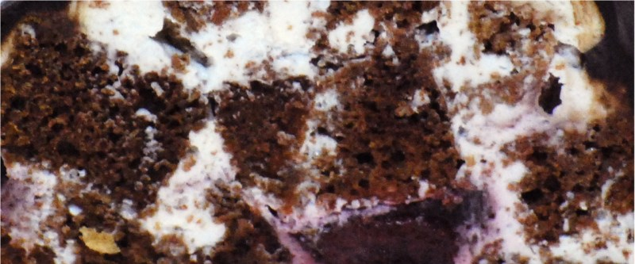

Графские развалины

Приготовить шоколадный пирог, только не в круглой форме, а на протвине. Дать слегка остыть, разрезать на кубики примерно 3х3 см. размером.
Приготовить сметанный крем: 750 гр. 30% сметаны взбить с 200 гр. сахарной пудры и ванильным экстрактом.
Сложить торт, обмакивая каждый кусочек коржа в креме и укладывая горкой, можно между слоями добавить вишню. Поставить в холодильник. Приготовить глазурь, полить сверху.